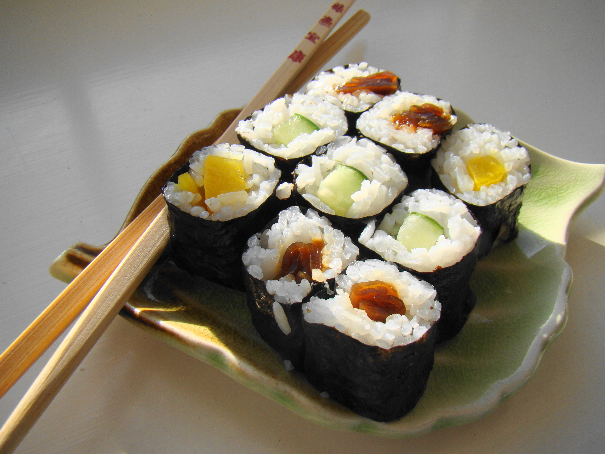

Hosomaki

Hosomaki are small, traditional Japanese sushi rolls that consists of dried
seaweed (nori) on the outside, seasoned white rice, and one single filling in
the middle.
Ingrediens:
For the sushi rice:
- 300 g - Japanese short-grain rice
- 45 ml - rice vinegar
- 5 g - salt
For the rolls:
- 5 sheets of Nori (dried seaweed)
- 150 g - filling of your choice (cucumber, tuna, salmon ora avocado)
For serving
- soy sauce
- pickled ginger
- wasabi
Steps:
-
Prepare the sushi rice - rinse the rice under cold watter until water runs clear.
Cook the rice according to package instructions. While still hot, transfer
the rice to a large bowl and gently fold in the mixture of rice vinegar,
and salt. Use a slicing motion with a spatula to avoid mashing the grains.
Let it cool to room temperature.
-
Prepare the filling - Slice your chosen protein or vegetable into long,
thin strips. For cucumber, it’s best to remove the watery seeds to keep
the roll crisp. Ensure your strips are roughly the same length as the
half-sheet of nori.
-
Assemble the roll - Place a bamboo rolling mat (makisu) on your workspace
and cover it with plastic wrap for easy cleanup. Lay a half-sheet of nori,
rough side up, on the mat. Wet your hands slightly to prevent sticking and
spread a thin, even layer of rice over the nori, leaving a 1 cm strip of bare
seaweed at the top edge.
-
Roll it up - Place your filling in the center of the rice. Using the mat,
lift the bottom edge of the nori over the filling and tuck it in tightly.
Continue rolling forward until you reach the bare strip of nori. Apply a tiny
bit of water to the edge to seal the roll.
-
Slice roll to serve - use a sharp knife, moistened with a damp cloth, to slice
the roll into equal pieces. Wipe and re-wet the knife between every few cuts to
ensure a clean finish. Serve immediately with your favorite additives.
Home